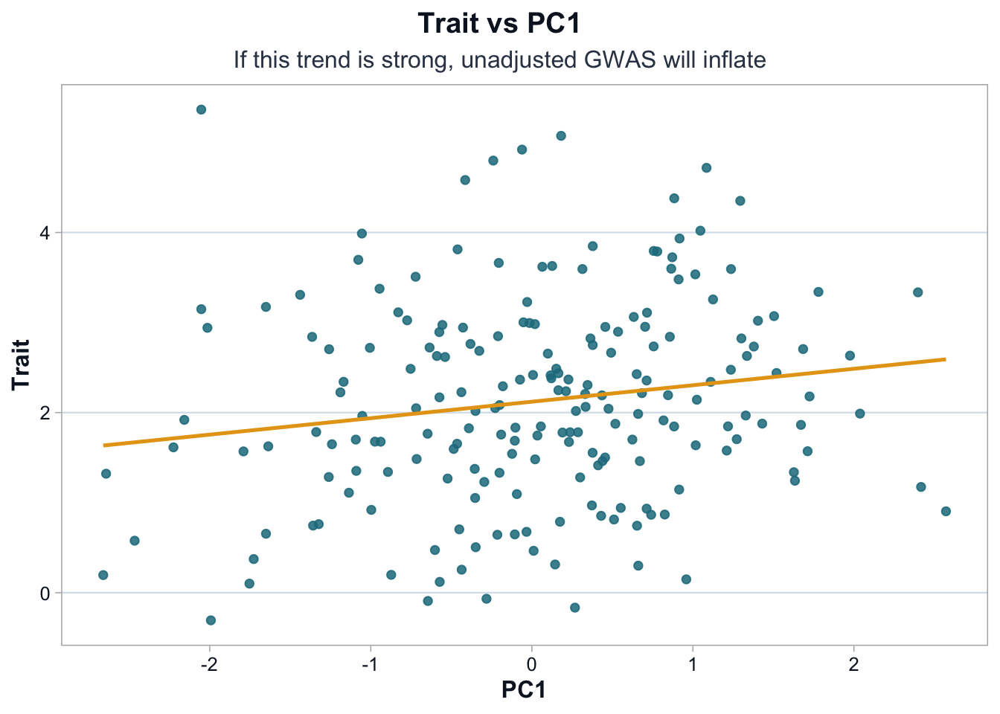
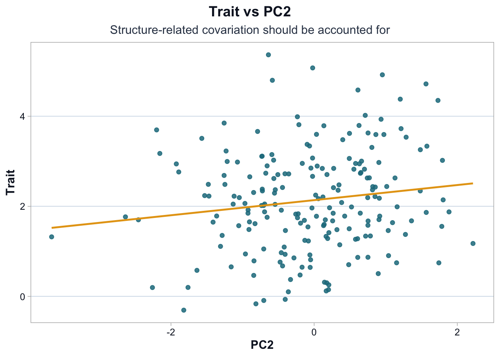

The trait appears approximately unimodal with moderate right skew.
There are no extreme outliers that would dominate a linear model.
At this stage, the question is not whether the distribution is perfectly normal.
The question is whether the trait scale is stable enough to support:
linear modeling assumptions
interpretable effect sizes
comparability across individuals
Minor skew does not invalidate GWAS.
Severe skew or extreme outliers would require transformation or sensitivity checks.
Principal Components and Structure
pal <-cdi_palette()ggplot(df, ggplot2::aes(x = PC1, y = trait)) + ggplot2::geom_point(alpha =0.85, color = pal$teal_light) + ggplot2::geom_smooth(method ="lm", se =FALSE, color = pal$highlight, linewidth =0.9) + ggplot2::labs(title ="Trait vs PC1",subtitle ="If this trend is strong, unadjusted GWAS will inflate",x ="PC1",y ="Trait" ) +cdi_theme()

The visible positive association between PC1 and the trait suggests that population structure contributes to trait variation.
If SNP allele frequencies also vary along PC1, then unadjusted association tests will partially capture ancestry rather than biology.
This produces:
inflated test statistics
excess small p-values
false positive associations
Adjusting for principal components is part of study design, not a cosmetic correction.
pal <-cdi_palette()ggplot(df, ggplot2::aes(x = PC2, y = trait)) + ggplot2::geom_point(alpha =0.85, color = pal$teal_light) + ggplot2::geom_smooth(method ="lm", se =FALSE, color = pal$highlight, linewidth =0.9) + ggplot2::labs(title ="Trait vs PC2",subtitle ="Structure-related covariation should be accounted for",x ="PC2",y ="Trait" ) +cdi_theme()

The association with PC2 appears weaker but still non-zero.
Even modest correlations with principal components can meaningfully affect genome-wide tests, because millions of variants are evaluated. Small structural biases can accumulate into large-scale inflation.